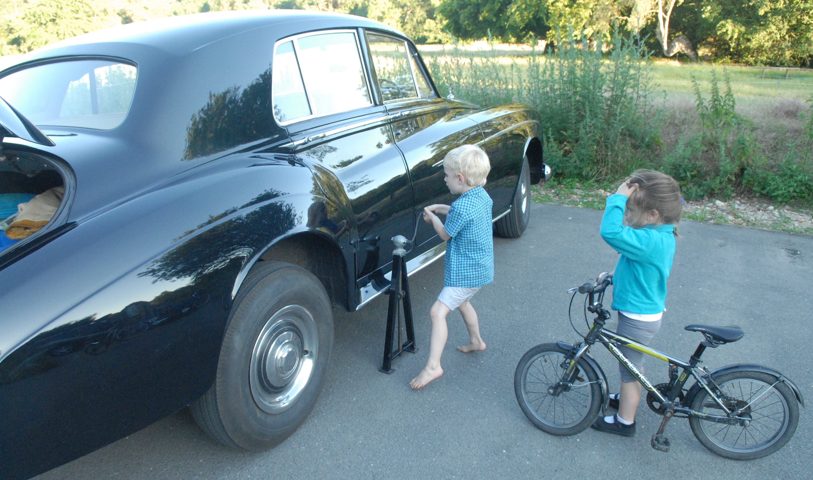
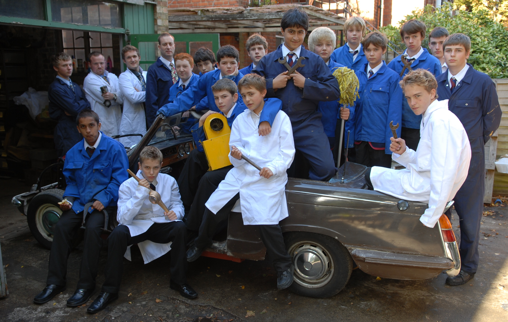

As a child I never dreamt that I could ever possess a car, let alone 8 cars. Since I purchased my first car, a Triumph Herald 13/60 saloon, in 1975, I have learnt to service and repair cars. Today I own 5 Triumph Herald 13/60’s: 2 saloons, 1 saloon with sunroof, 1 estate and 1 convertible. I also own two Volvo 144DL automatics and a Rolls Royce Silver Cloud III. The vehicles are all fully roadworthy and are regularly driven on long journeys across Europe.

Training mechanics from an early age (2019)

If man made it, man can fix it (2007)